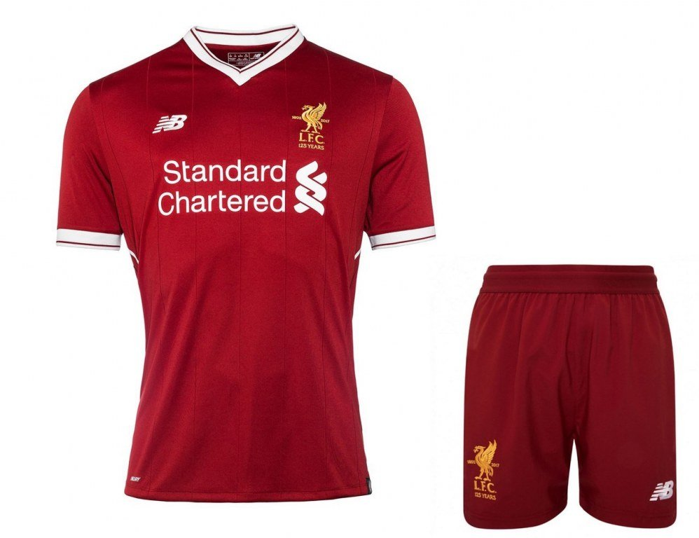

Emblem
For much of Liverpool's history its home colours have been all red, but when the club was founded its kit was more like the contemporary Everton kit. The blue and white quartered shirts were used until 1894, when the club adopted the city's colour of red.The city's symbol of the liver bird was adopted as the club's badge in 1901, although it was not incorporated into the kit until 1955. Liverpool continued to wear red shirts and white shorts until 1964, when manager Bill Shankly decided to change to an all red strip.Liverpool played in all red for the first time against Anderlecht, as Ian St. John recalled in his autobiography:
He thought the colour scheme would carry psychological impact – red for danger, red for power. He came into the dressing room one day and threw a pair of red shorts to Ronnie Yeats. "Get into those shorts and let's see how you look", he said. "Christ, Ronnie, you look awesome, terrifying. You look 7 ft tall." "Why not go the whole hog, boss?" I suggested. "Why not wear red socks? Let's go out all in red." Shankly approved and an iconic kit was born.
The Liverpool away strip has more often than not been all yellow or white shirts and black shorts, but there have been several exceptions. An all grey kit was introduced in 1987, which was used until the 1991–92 centenary season, when it was replaced by a combination of green shirts and white shorts. After various colour combinations in the 1990s, including gold and navy, bright yellow, black and grey, and ecru, the club alternated between yellow and white away kits until the 2008–09 season, when it re-introduced the grey kit. A third kit is designed for European away matches, though it is also worn in domestic away matches on occasions when the current away kit clashes with a team's home kit. Between 2012–15, the kits were designed by Warrior Sports, who became the club's kit providers at the start of the 2012–13 season.In February 2015, Warrior's parent company New Balance announced it would be entering the global football market, with teams sponsored by Warrior now being outfitted by New Balance.The only other branded shirts worn by the club were made by Umbro until 1985, when they were replaced by Adidas, who produced the kits until 1996 when Reebok took over. They produced the kits for 10 years before Adidas made the kits from 2006 to 2012.